One quantity — an agent's control over its own future — in two readings, its level and its rate of change. Embodied, it yields a foraging rhythm, a developmental curriculum, and an escape from the paradoxes that trap the other reward-free principles.
Abstract. Reward-free agents are usually driven by one of a few intrinsic principles — curiosity (information gain), the free-energy principle, maximum occupancy — each with a known adversarial failure. We take a single quantity, empowerment (the channel capacity from an agent's actions to its future observations — how much control it has), and show that in two readings it does a surprising amount of work. Part I: its moment-to-moment gain, with actuators throttled by a depleting body, produces a relaxation oscillation between a consolidate phase and a venture phase, the explore/exploit balance set by a physical timescale (T ∝ 1/δ) rather than a tuned weight — beating the weighted-sum baseline it is meant to replace. Part II: its learning progress on a learned model forages the frontier of what the agent can control and ignores the “noisy TV,” and, given a world with prerequisite structure, climbs a developmental curriculum with no schedule. Part III: because empowerment counts only the futures you cause, it sidesteps the noisy-TV and grand-roulette traps that snare information-gain and maximum-occupancy — and the move that makes it lively rather than throned, taking a derivative and embodying it, is the one corner of the landscape that escapes every paradox.
A drive that only ever climbs a fixed landscape ends at a fixed point. Alternation between two behaviours is a limit cycle, and limit cycles need delayed negative feedback. So the interesting question is not "how do we compute a curiosity signal" — there are several good ones — but what makes occupying a good state degrade it, with a recovery lag, so that a single appetite produces a rhythm rather than a resting place.
Our candidate appetite is empowerment (Klyubin, Polani & Nehaniv): an agent's empowerment at a state is the Shannon channel capacity from a short sequence of its own actions to its resulting future observations — an intrinsic, reward-free measure of "how much control I have here." The established way to get exploration and exploitation out of such a measure (de Abril & Kanai; and, in a different idiom, the expected-free-energy decomposition of active inference) is to add a second, epistemic term and tune the mix. We test a structurally different claim: one empowerment-gain functional, two faces, alternating in time because two slow variables hand off which face is binding.
The arena has two open basins where many futures are reachable (high empowerment), joined by a constricted corridor, with a resource placed in a moderate-empowerment chamber. The agent is a five-action grid vehicle whose body integrity b ∈ [0,1] gates its actuators: with probability g(b) the commanded action is replaced by a random one, and g is steep near b=0. Commands therefore pass through two channels in series, An → body, noise g(b) Ãn → world + sensors Xt+n , and by the data-processing inequality the realizable empowerment can never exceed the tighter stage.
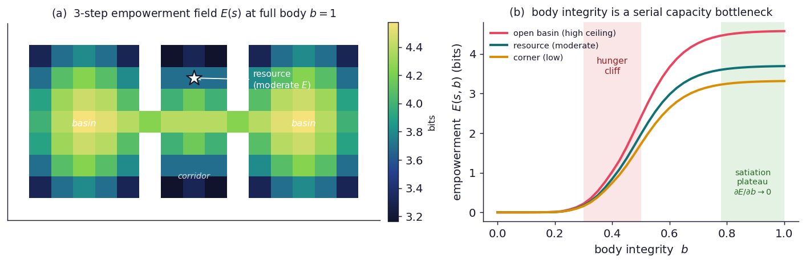
The agent acts to maximize the discounted gain in empowerment it can realize by going somewhere, R = Ê(after) − Ê(before). This single quantity has two sources, both increments of the same E, added with coefficient one — there is no mixing weight anywhere in the code:
That gate is not a survival term bolted on; it is the same data-processing inequality that makes the body a bottleneck, now applied to viability. It is also the load-bearing idea: it makes "to explore effectively, first consolidate" a consequence — you cannot realize control gains on a depleted platform — rather than a scheduling rule. (It is the one modelling choice doing real work; we return to it critically in §10.)
This is the actual agent — the planner, the body bottleneck, and the forgetting model all run in your browser; nothing is pre-recorded. Watch the world dim as the body depletes, the agent commute between the resource (★) and the far basins, and the two faces take turns. Then drag metabolic rate δ and watch the feeding period track 0.14/δ.
Crossing the drive (level vs. gain) with the feedback (off vs. on) isolates what each ingredient contributes. Only the full combination both consolidates and explores.
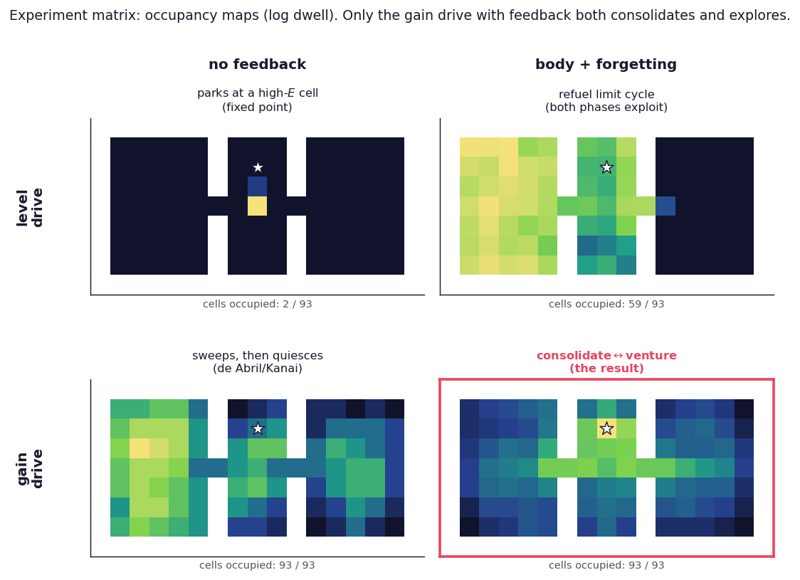
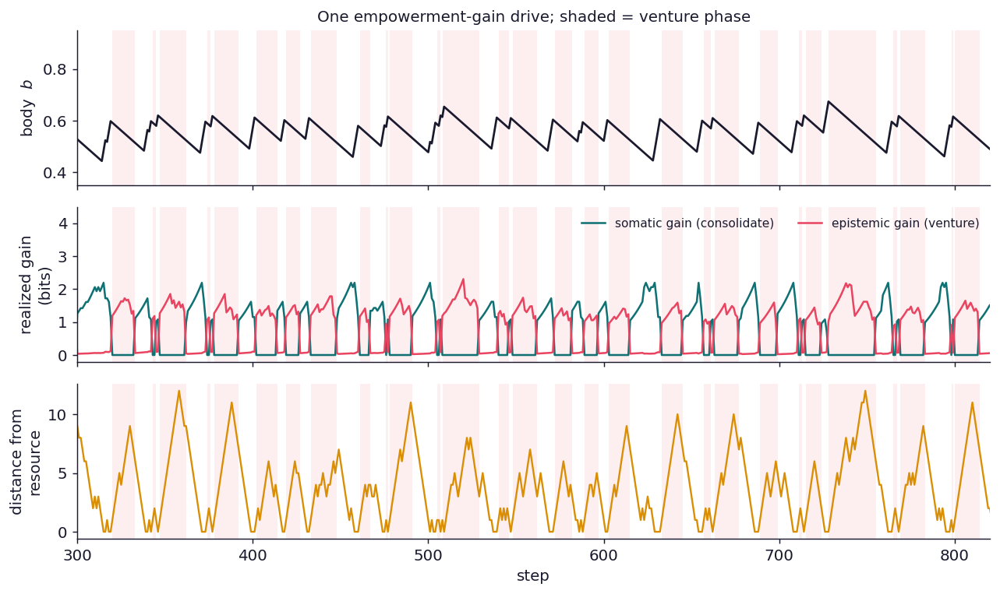
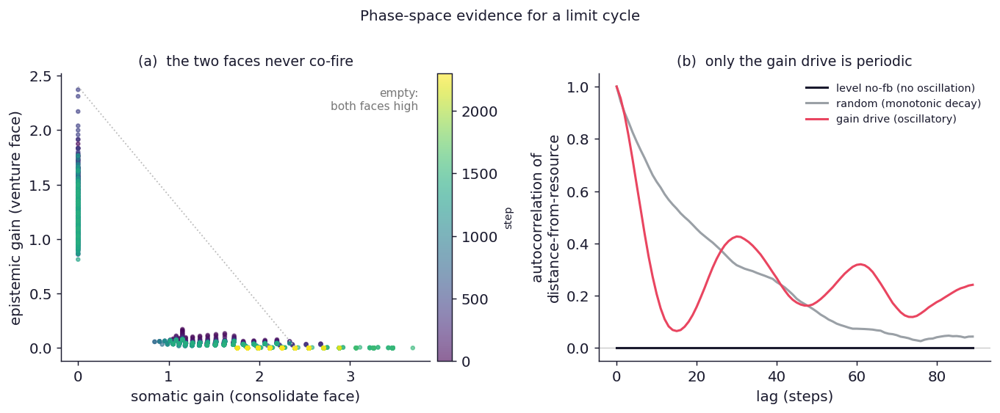
If a hidden tradeoff parameter were secretly blending the two behaviours, we would see both faces contributing at every step. Instead each phase is driven almost purely by one face.
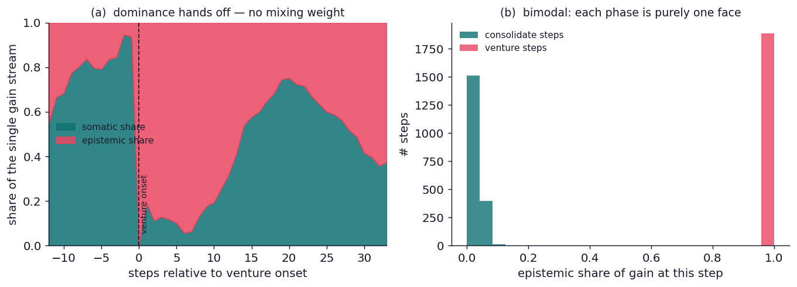
The decisive, falsifiable signature of a relaxation oscillator (rather than a tuned blend) is that the period scales with the physical recovery/depletion timescales. It does, cleanly, for the metabolic rate.
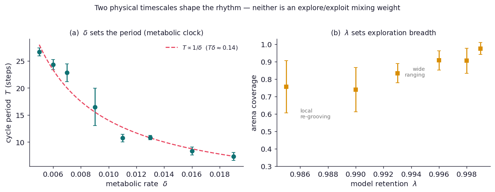
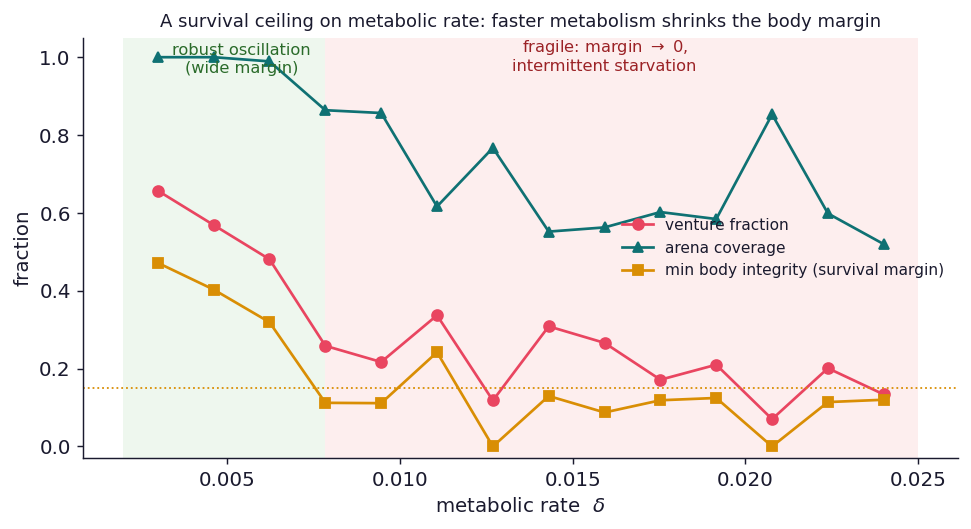
Strip away the spatial detail and the agent tracks a single slow variable — body integrity b — pushed by the two faces: somatic σ(b) grows as b falls (hunger), epistemic w·Efar(b) grows as b rises (control to spend on exploring). They cross at a setpoint b* where the faces balance (Fig. 12a) — and the agent's body sits right there. That setpoint is not a tuned weight; it is a fixed point of the body–empowerment dynamics, set by the empowerment field and independent of δ. Around it the body relaxes at two fast-switched rates — deplete at −δ, refuel at +ι (Fig. 12b) — the signature of a relaxation oscillator. Because the setpoint geometry doesn't move with δ while the rate of approach does, the period is a pure metabolic clock: T ∝ 1/δ, in both the reduced model and the full agent (Fig. 12c).
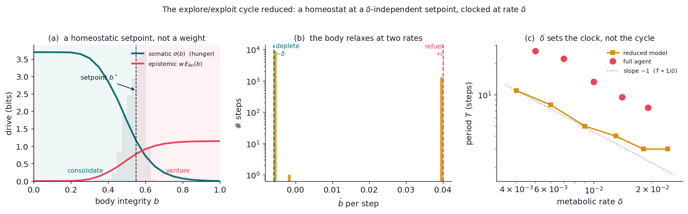
One honest caveat: this is a weak-amplitude relaxation oscillator, not a dramatic van der Pol swing between full and empty — and that is a consequence of the design, not a disappointment. The same viability gate (§13) that keeps the agent alive also keeps it near b*, so it makes small, safe excursions rather than crashing between extremes. The reduction is qualitative — it omits the travel that sets the true amplitude — but it isolates the one thing the headline rests on: the explore/exploit balance is a homeostatic setpoint, and δ only sets how fast the agent orbits it.
The sharpest test of the claim is to build the thing we say we differ from and race it. Both established approaches — empowerment + curiosity (de Abril & Kanai) and the expected-free-energy sum of active inference — share one structure: a weighted blend R = (1−β)·empowerment + β·novelty evaluated every step. We ran exactly this in the identical body-and-forgetting world, sweeping the weight β, so the drive is the only thing that changes.
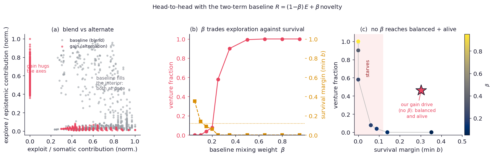
This is the concrete cash value of "one functional, not a weighted sum." The blend can buy exploration or survival, set by a dimensionless knob; it has no timescale and no win-win. Ours buys both, set by a physical rate, with nothing to tune.
A natural worry: maybe this is just foraging dressed up, sensitive to our choice of "empowerment over position." So we recomputed everything with empowerment over the agent's sensor readings (the faithful Braitenberg quantity) — a field that is genuinely different from the positional one.
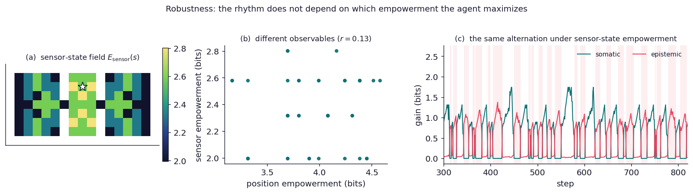
A fair objection to "one functional, two faces" is that the somatic face uses real empowerment while the epistemic face is a visit-count proxy — so maybe the epistemic term is just a relabelled novelty bonus. To answer it directly we gave the agent a tabular model of its world, p̂(s'|s,a) (it knows its own body channel but must learn the layout), and computed empowerment on that learned model.
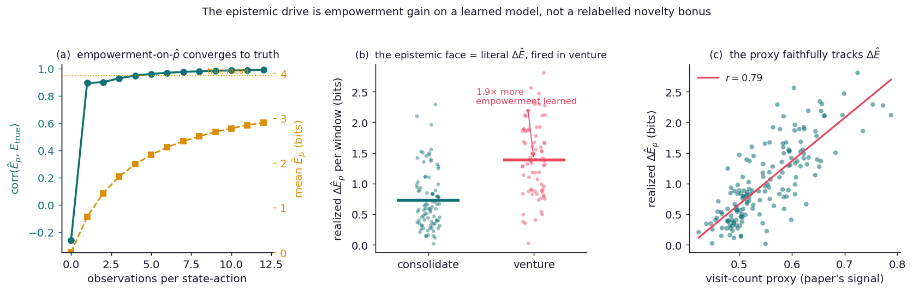
So the two faces are increments of the same functional after all: the proxy is a fast, faithful stand-in, not a second drive. (We act on the proxy for speed; a controller that plans directly on Êp is also implemented — it needs a familiarization phase and is markedly heavier and more fragile, so the proxy validation above is our clean evidence rather than a fully model-based run.)
The one piece of machinery a critic should press hardest on is the epistemic gate's return-budget, bviab = b − δ(τ + dhome): it puts distance-to-home inside an empowerment formula, which reads like a survival objective bolted on. We took the objection seriously and tried to remove it — to let viability emerge from planning instead. It does not work cheaply, and seeing why vindicates the gate.
We replaced the gate with a planner that simulates the body forward in (s,b) under the
agent's own policy and values each action by its rolled-out empowerment gain — with no distance-to-home
anywhere (RolloutPlanner). In principle an excursion you cannot afford should expose itself:
the body runs down, empowerment collapses through the bottleneck, the rollout's tail is worthless.
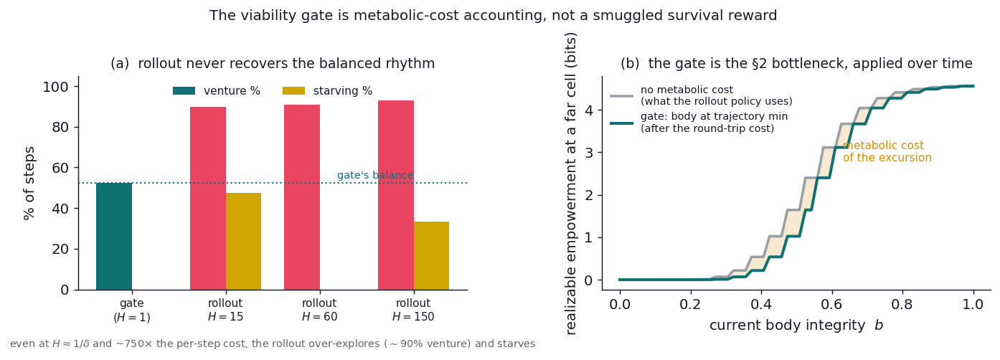
So dhome is not a survival budget; it is the time to the nearest sustaining state — where the trajectory's body-minimum falls. And the whole point of the gate is tractability: it is assembled from cached quantities — a shortest-path distance computed once, and the empowerment table read off at the round-trip body level — composed in constant time to return the answer that the intractable rollout would have computed honestly. "Cache" almost captures it, except a cache merely stores a result you would otherwise recompute the same way, whereas the gate replaces the algorithm: the faithful computation is "simulate the body forward and see whether I strand," and the gate is a closed form that gives the same verdict without the simulation. The genuinely inert caches in the agent — the empowerment table, the distance map — nobody would call smuggled objectives; the gate is the interesting case precisely because it is a shortcut, not just storage.
Now suppose a critic digs in: the gate still encodes "get home before you starve," and that is a reward by another name. They are right — and the uncomfortable truth is that the same is true of any agent that plans, including one with a learned value function. A value estimate is just a compressed summary of the future, and a summary of the future is interconvertible with a reward: by the shaping equivalence you can always fold a long-horizon value term into the per-step reward without changing what the agent does. So "you smuggled in a reward" is not a falsifiable charge. It lands equally on a hand-derived gate, a cached table, and a neural critic — on everything that looks past the next step. Conceding it costs nothing.
What the objection really does is move the question to the one that can actually be answered: not is this reward-shaped? (everything that anticipates the future is), but is the quantity forced by the body and the empowerment functional, or is it a free parameter I chose? On that test the gate passes. dhome is not a number we picked — it is the literal metabolic cost of the trip, fixed by the arena and δ, with no coefficient to turn. The genuinely smuggled objective in this literature is the one we measured against in §10: the weight β that hand-sets the explore/exploit balance. That is a free dial; dhome is a measurement. So the distinction that survives scrutiny is not reward-versus-not — a bar nothing clears — but derived versus posited, and on that test the gate is derived.
A child masters basic motor skills before attempting harder ones; learners gravitate to tasks of intermediate difficulty — not too easy, not too hard. The classic computational account is learning progress (Oudeyer & Kaplan): be drawn to where you are improving fastest, which is automatically the frontier between the mastered and the unlearnable. Its well-known failure mode, and the reason it must be a derivative rather than a level, is the noisy TV: a screen of static is maximally surprising and stays that way, so a curiosity that chases surprise gets stuck watching it forever.
Part I drove exploration with empowerment — an agent's information-theoretic control over its own future. Here we ask: does the learning-progress version of empowerment — the recent rate of realized gain in computed empowerment, on a learned model (§12) — show the zone-of-proximal-development behaviour, and does it dodge the noisy TV? And it should dodge it for a reason prediction-error curiosity can't claim: empowerment is control-grounded. A noisy TV is not just unpredictable — it is uncontrollable, so there is no empowerment to be had there, learnable or not.
In a grid, “harder” usually means “farther,” and an agent that prefers near regions would look developmental without being about difficulty at all. So the arena is a hub with four chambers on equal-length corridors. Two are open frontier chambers (rich, learnable control); one is a small easy pocket (mastered fast); one is the noisy TV — structurally identical to a frontier chamber, the same distance from the hub, but with high intrinsic action noise. Anything the agent prefers here is about controllability, not distance.
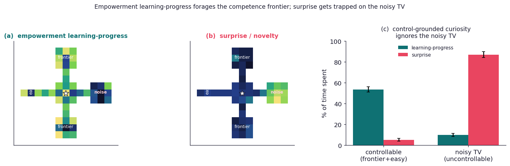
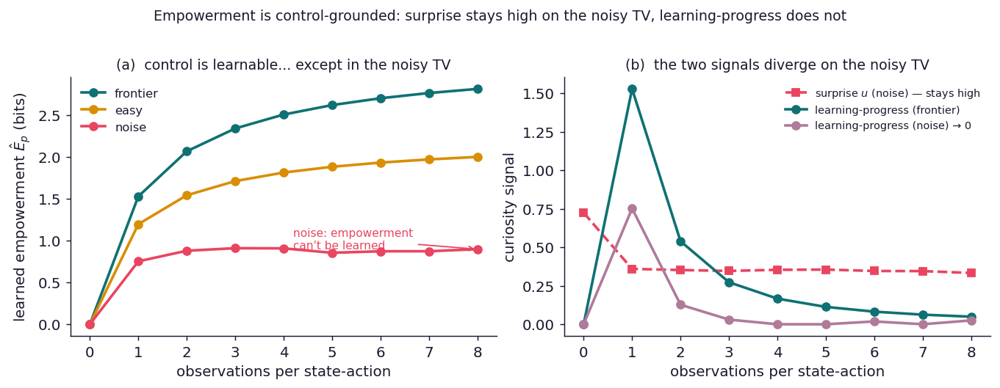
One ingredient turned out to be essential and worth naming: motor babbling. A purely goal-directed planner only ever executes the one action that moves it toward its target, so it never learns what its other actions do, and every region stays uncertain forever. The agent has to try its actions — to babble — to learn local control. That repetition-to-master is not a nuisance; it is the developmental story in miniature.
The agent runs live in your browser. Switch the drive from learning-progress to surprise and watch it march into the noise chamber and stay. Turn the noise slider down to zero and the “noisy TV” becomes an ordinary learnable room — and the surprise agent stops getting stuck.
The preference is half the developmental story. The other half is sequencing — a curriculum that marches through stages of increasing complexity. Our first attempt at that, a ladder of chambers at increasing distance, did not produce stages, and the reason is the most useful thing it taught: a curriculum needs prerequisite dependencies. In that ladder the chambers were independent — each region's empowerment depended only on its own local dynamics, so mastering one never unlocked another, and there was simply no curriculum to discover. The mastery order was set by exploration noise, not by competence (predictably so — it was the wrong environment).
So we built the right one: a switch–gate chain. Rooms R0→R1→R2 separated by gates; gate k
opens only when the agent operates switch k in room Rk. The state is augmented to
(cell, gate-bits) and empowerment is computed over it. Now R1 is genuinely unreachable — and
has zero empowerment — until the agent's model has learned that switch 1 opens gate 1. Mastering
the “tool” unlocks downstream control. This is the prerequisite the independent chambers lacked, and it is
exactly the tool-use dependency that grounds it in the empowerment literature.
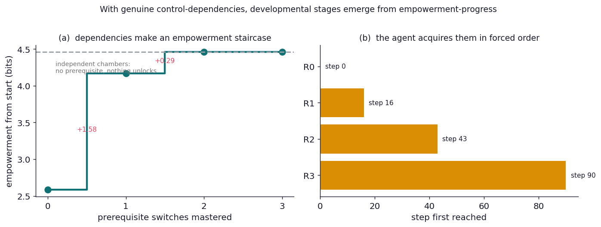
Two bounds, stated honestly. First, the n-step empowerment horizon caps how far an unlock propagates to a fixed start: rooms beyond the horizon don't register in the from-start view, so the staircase visible from one vantage point saturates after the first unlock or two (the acquisition order, by contrast, stays cleanly forced however long the chain). Second, easy switches make the stages temporally close; harder switches spread them out. Both are tunable and cost only compute. The developmental sequencing we could not get from a homogeneous world appears as soon as the world has the dependency structure that sequencing requires — which is the right answer, not a workaround.
It would be easy to oversell this. Let us be precise about the standing on others' shoulders, then about the genuinely new part, then about where a skeptic is right.
Empowerment as an intrinsic drive (Klyubin–Polani–Nehaniv; Salge, Glackin & Polani), empowerment under state-dependent noise (Salge & Polani), the combination of empowerment with a curiosity term (de Abril & Kanai, 2018), the epistemic/pragmatic decomposition of behaviour (the expected-free-energy account of active inference), and relaxation oscillators themselves (the van der Pol motif) are all prior art. For the developmental half (Part II): learning progress (Oudeyer & Kaplan) and compression progress (Schmidhuber's POWERPLAY) as drivers of staged curricula; the noisy-TV failure of prediction-error curiosity; and empowerment combined with skills and tools (Hierarchical Empowerment, Levy et al. 2023; Object Empowerment, Rasheed, Polani & Catenacci Volpi 2023) — though, we checked, in ways that do not show staged emergence. We reuse all of it.
If a two-phase explore/exploit schedule can be a consequence of one viability-grounded information measure plus slow body dynamics, then two modest things follow. For artificial agents, the explore/exploit schedule need not be a hyperparameter to anneal — it can fall out of an embodiment with a metabolic cost. For biology, the felt rhythm of "consolidate the basics, then venture" gets a candidate normative basis: the conservative phase is not opposed to growth but its precondition, because control gains are unrealizable on a depleted platform. Both are extrapolations from a 93-cell toy, and we hold them loosely.
The sharpest neighbour to this work is the Maximum Occupancy Principle (Ramírez-Ruiz, Grytskyy, Mastrogiuseppe, Habib & Moreno-Bote, Nat. Commun. 2024). MOP is also reward-free, but it proposes a different north star: behave so as to maximally occupy future action-state path space — formally, maximize the discounted future entropy of your own action-state trajectories, V(s)=𝔼[Σ γt(αH(A|st) + βH(S'|st,at))], yielding a soft (Boltzmann) policy. From this one quantity they get strikingly lively behaviour — exploration that visits everywhere, “dancing,” hide-and-seek, even a basic altruism — and survival for free: absorbing “death” states promise zero future entropy, so a MOP agent shuns them with no survival term. Tellingly, they single out empowerment as the foil, reporting that empowerment agents “collapse to deterministic policies with little behavioural variability,” parking at the highest-control state and staying there (the same parking §5's level drive shows).
But MOP's state-entropy term, H(S'|s,a), is exactly the next-state randomness that empowerment subtracts — the noise. In a world with a genuine noise source, MOP should therefore be drawn to the noisy TV: maximal state entropy is maximal occupancy. So we asked the natural question: what if occupancy were measured over controllable futures instead of all futures? We ran MOP's own soft value iteration in our noise arena under two rewards — MOP's H(S') versus the empowerment E(s) (controllable reach) — changing nothing else.
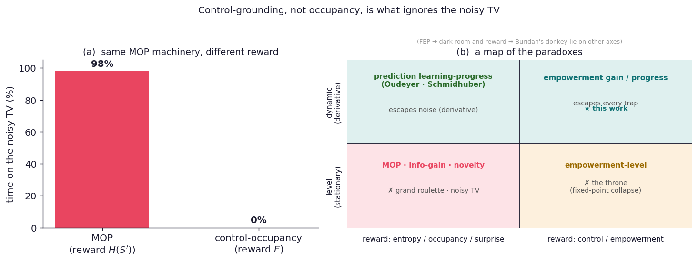
So a control-weighted occupancy keeps what is attractive about MOP — the lively, anti-parking, reward-free drive — while shedding its blind spot. More broadly, the comparison resolves into two axes (Fig. 16b): what you reward (occupancy/entropy vs. control) decides whether you chase or ignore the noisy TV, and level vs. progress (a quantity vs. its derivative) decides whether you settle into stationary behaviour or develop temporal structure — the explore/exploit rhythm of Part I, and the curriculum of §19. MOP is elegant and parsimonious for survival and open-ended liveliness; empowerment is the better currency when the target is competence — variety you can command, not merely generate.
This comparison sits inside a clean taxonomy. A recent review (arXiv:2601.10276, 2026) lays out a paradox for every reward-free principle — an adversarial world that breaks it: reward maximization has Buridan's donkey (it cannot break ties); the Free Energy Principle has the dark room (minimize surprise and you hide in the featureless dark); information-gain has the noisy TV; and MOP has the grand roulette — “a gambler encountering a grand roulette, with a myriad of possible bets, will be trapped to play it ad infinitum,” because endless bets are endless action-state occupancy. Tellingly, the review's own prescribed cure is not a new principle but embodiment.
Two of these paradoxes are the same trap once you ask about control. The noisy TV (uncontrollable sensory diversity) and the grand roulette (uncontrollable action-state diversity) are both variety the agent does not cause — and empowerment, which counts only the futures your actions determine, is blind to both. We built MOP's nemesis to check: a control room (deterministic moves, empowerment 2.3 bits) beside a gambling room (interchangeable random bets, empowerment 1.0 bit).
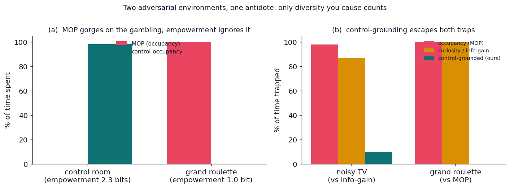
Honesty cuts the other way too. MOP's authors press empowerment on exactly the failure we keep meeting: in a head-to-head comparison (Moreno-Bote & Ramírez-Ruiz, 2023) they prove empowerment (and certain Free-Energy agents) “collapse within a small repertoire of action-state trajectories or fixed points,” preferring the most controllable state and throning there. We do not dispute it — we reproduce it (the parking of §5's level drive). The throne is empowerment's paradox, the control/level corner of Fig. 16b.
The escape is precisely the review's own prescription — embodiment — read as a derivative. Give empowerment a body that depletes and its value of staying decays, so the throne becomes a foraging cycle (Part I); take its progress rather than its level and a mastered region loses all pull, so the agent leaves rather than thrones, and climbs a curriculum where the world affords one (§19). Either way the fixed point is dissolved by the same move MOP uses to stay lively — making the objective about change, not level — but kept control-grounded, so the noisy TV and the grand roulette stay powerless. That is the one corner of the map (Fig. 16b, top-right) that escapes every paradox in the box: control for the noise traps, the derivative for the throne, and a positive drive that never seeks the dark room.
The arena is a 17×9 grid: two open 5×7 basins flanking a small central chamber, joined by a corridor (row 4) with walls elsewhere. The single resource sits in the central chamber, a moderate-empowerment region — the existence condition for a completable satiation phase (§2). The agent occupies one cell and has five actions {N, E, S, W, stay}; moves into walls leave it in place. Its state for the drive is (cell, body integrity b∈[0,1]). Distances and first-steps between cells are precomputed once by BFS.
Body integrity gates the actuators: with probability g(b) = 1/(1+exp(14(b−0.40))) the commanded action is replaced by a uniform-random one. This sigmoid gives a near-zero-noise plateau at high b (so feeding when sated yields ≈0 gain) and a steep collapse below b≈0.4 (so feeding when hungry yields a lot). Each step b←b−δ; on the resource cell b←min(1, b+ι). Because the command passes through the body channel and then the (deterministic) world, realizable empowerment is the capacity of the composition and obeys the data-processing inequality (§2).
n-step empowerment (n=3) is the Shannon capacity maxp(an) I(An;Xt+n) from action sequences to the future cell (or, for Fig. 8, the future sensor reading), computed exactly by Blahut–Arimoto on the body-gated n-step transition operator. We keep two operators strictly separate: the true dynamics, used to generate transitions, and the agent's learned model, used to compute the drive. The field is cached over a grid of 21 body-integrity bins and recomputed only where the model or b changes; per-cell capacity costs one Blahut–Arimoto run over the 53=125 sequences.
The agent maximizes the discounted gain R = Ê(after) − Ê(before), which has two faces of the one functional, summed with coefficient one (no mixing weight): a somatic face (the empowerment restored by refuelling, nonzero only at the resource, large only when hungry) and an epistemic face u(c)·E(c, bviab), where u is model uncertainty and the body level bviab=b−δ(τ+dhome) is the integrity left after budgeting the round trip (the §13 metabolic-cost gate). The planner is receding-horizon on shortest paths: it scores every reachable cell by γτ·(somatic+epistemic) with discount γ=0.94 and travel time τ, steps one cell toward the best, executes under real actuator noise, and replans. So the period is set by physical timescales (§9), not a weight.
For most experiments, uncertainty is a tabular visit-count field u=1/(1+N) with
multiplicative forgetting N←λN applied everywhere including the home region (so consolidation
re-grooves rather than refuels once). For §12 the agent instead learns a Dirichlet world model
p̂(s'|s,a) over each cell's local candidate outcomes (prior α=0.25), recomputes
empowerment on p̂, and the realized increment ΔÊp validates the visit-count
proxy (corr 0.79). Baselines: the §10 two-term drive (1−β)·E+β·novelty, and the §13
RolloutPlanner that simulates the body forward in (cell, b) with no
dhome term.
Headline run: δ=0.006, ι=0.04, λ=0.996, γ=0.94, n=3. Scaling sweeps vary δ and λ; the existence
band and Goldilocks results map δ. Empowerment values are reported in bits; periods in steps. The full
source — Python for the science (Blahut–Arimoto, the learned model, the planner, the rollout and reduced
models), vanilla JS for the live demo — reproduces every figure and the demo data from a single script,
make_figures.py (Part I).
Arena and drive. A hub joins four equidistant 3×3 chambers — two learnable frontiers, an easy pocket, and a noisy chamber carrying a per-cell environmental action-noise field. Empowerment is computed on the agent's learned Dirichlet model (the §12 machinery), so a region's value is what it has so far learned to control; the drive is a per-cell exponential-moving-average (rate 0.35) of the realized increment in that empowerment — learning progress. The surprise baseline drives on raw model uncertainty u=1−meana maxs' p̂, which stays high on the noisy chamber because its posterior never sharpens. ε-babbling (ε≈0.3, learning from the commanded action) supplies the action exploration without which no local control is learned; the body is relaxed (δ=0), isolating where curiosity points.
The dependency environment (§19) augments the state to (cell, gate-bits) — a switch
latches its gate, a gate is passable only when set — and computes empowerment (n=4–5) over it; the
unlock staircase is read on an idealised operator with only the first k switches functional, the
forced order on the autonomous agent. The landscape comparison (§21) runs MOP's soft value iteration
V(s)=α·logsumexpa[(r+γ𝔼[V'])/α] (α=0.5, γ=0.95) under two
rewards — next-state entropy H(S') (MOP) vs the empowerment field E(s) — on the
noise arena and on a small grand-roulette MDP (a control room beside a gambling room of interchangeable
random bets, empowerment by Blahut–Arimoto per state). Part-II figures and demo regenerate from
make_progression_figs.py; code in empower/progression.py,
empower/gated.py, empower/paradox.py, demo/progression.js.